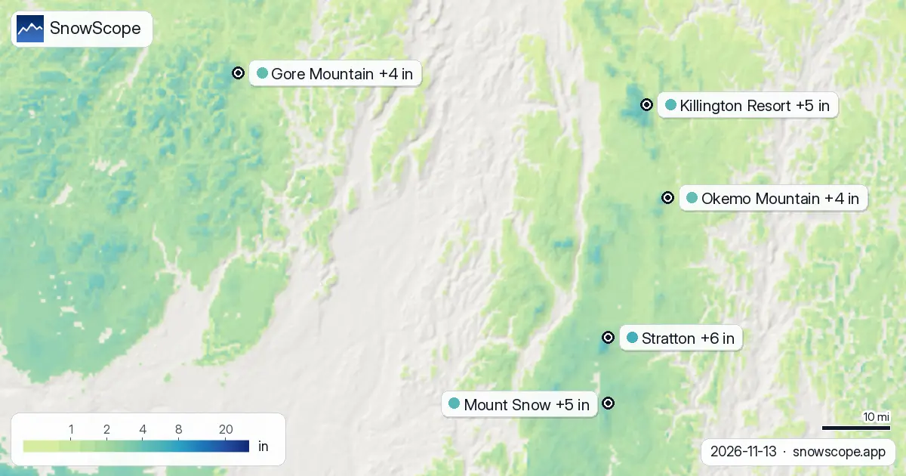
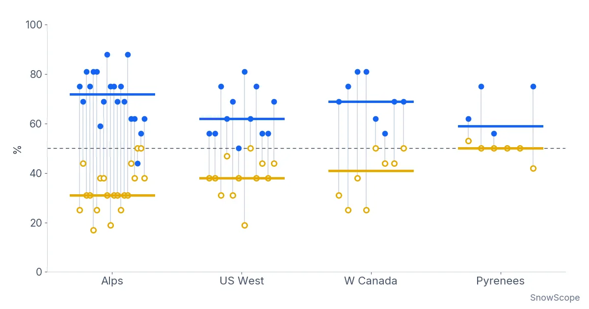

Schneeberichte
Tägliche Schneeberichte für Skifahrer: wo der Schnee liegt, was kommt und wo du fahren kannst, aus der SnowScope-Schneekarte und Messstationen. Jede Zahl stammt aus den Daten des Tages.

Von jetzt bis zum 16. November erwarten wir 5 in (12 cm) in Stowe, 4 in (11 cm) in Bolton Valley Resort und 4 in (10 cm) in Sugarbush Resort. Unsere …

201.390 km²: So groß ist die Schneefläche, die unser Modell heute in Westkanada zählt. Die letzte klare Ansicht jedes Ortes, bis zum 13. November: …

Skibedingungen in Deer Valley am 13. November 2026: noch kein richtiger Schnee am Boden, rund 4 in nahe dem Gipfel durch den Sturm am Wochenende, Regen auf der tiefen East-Village-Seite unter etwa 6,700 bis 7,600 ft und 11 in oben über die Woche.

Ist das ein guter Winterstart im Nordosten der USA? Der heutige Schnee in 4 Skigebieten im Nordosten der USA, verglichen mit demselben Datum in jedem …

Von jetzt bis zum 16. November erwarten wir 13 in (34 cm) in Bear Valley, 13 in (34 cm) in Dodge Ridge und 13 in (33 cm) in Badger Pass. Ein Wort zu …

Neuschneevorhersage für Park City (Utah) am 13. November 2026: im Moment kaum Schnee am Boden, rund 5 in nahe dem Gipfel durch den Sturm am Wochenende bei einer Schneefallgrenze von 7,400 bis 7,700 ft, Regen unten und rund 12 in oben über die Woche.

Stratton nach Höhe, aus unserem Modell: Gipfel 4 in (10 cm) (3.881 ft / 1.183 m), Mitte 2 in (6 cm) (2.936 ft / 895 m), Tal 1 in (2 cm) (1.991 ft / …

Füllt sich der Schneespeicher wie üblich? Wir haben den heutigen Schnee in 5 Skigebieten in Westkanada mit demselben Datum in jedem der letzten 46 …

Schneevorhersage für Alpental am 13. November 2026: etwa 1 in am oberen Berg, am Wochenende Regen fast bis zum Gipfel bei einer Schneefallgrenze von 5,400 bis 5,600 ft, nächste Woche oben 4 bis 5 in Regen und Schnee gemischt.

Schnee-Check für Bogus Basin am 13. November 2026: noch kein Schnee am Boden, am Wochenende Regen und nasser Schnee mit einer Schneefallgrenze bei 6,300 bis 6,800 ft, danach kältere Luft und rund 8 in am Gipfel bis nächste Woche.

39 in (99 cm) in den oberen Hängen: Deshalb steht Telluride oben auf unserer Liste. Schneehöhe heute, Neuschnee der letzten 72 Stunden, Prognose: …

Der Pistenplan von Sillian (Hochpustertal) mit unserer Schneeschicht am 13. November 2026: 8,6 cm am Gipfel auf 2399 m, untere Hänge aper, und eine Woche mit Regen und Schnee gemischt, Schneefallgrenze bei 1.800 bis 2.000 m.

Revelstoke Schneeprognose: bis zu 10–21 cm bis zum 16. November erwartet (Westkanada). In Whistler Blackcomb liegt die Nullgradgrenze am 13. November …

Schneelage in Silvretta Montafon am 13. November 2026: 4,5 cm am Gipfel auf 2421 m, Mittelstation und Tal noch aper, diese Woche rund 40 cm in der Höhe, im Tal Regen unter 1.500 m.

Schneebericht Lech Zürs am 13. November 2026: rund 6 cm oben (2436 m) und an der Mittelstation, aper in Lech auf 1430 m. Diese Woche oben 42 cm nach unserer Prognose, bis 91 cm nach anderen, Regen und Schnee gemischt um 1400 m. Und warum Lech die schneereiche Seite des Arlbergs ist.

Modell plus Prognose in den Alpen ergibt heute frischer Pulverschnee. Was du anziehst, was du einpackst und wann du fährst, Skigebiet für Skigebiet. …

Schneehöhe in St. Anton am Arlberg am 13. November 2026: rund 1 cm oben (2642 m), 5 cm an der Mittelstation, aper im Ort. Diese Woche 42 cm oben und 33 cm an der Mittelstation, Regen unter etwa 1480 m. Wie viel Schnee die steilen Hänge brauchen.

Dévoluy Schnee-Ausblick: auf Kurs für 24–32 cm bis zum 16. November (Alpen). Bis zum 16. November ergibt unsere Prognose 35 cm in Orcières Merlette, …

Die Schneefläche ist von 39.090 km² am 11. November auf heute 76.100 km² gewachsen, und unsere Prognose ergibt 57.910 km² am 16. November: Mehr Boden …

Die Skigebiete im Atlas halten heute keinen Schnee auf ihren Pisten. Schnee ist nur auf den höchsten Gipfeln gespeichert: etwa 40 km² Boden, bis zu …

Schneebericht Obergurgl am 13. November 2026: rund 20 cm oben (3024 m), 5 cm an der Mittelstation, schneefrei an den untersten Liften (1784 m). Schneeprognose der Woche: 34 cm oben, 21 cm unten, Schneefallgrenze um 1700 m. Dazu der übliche Saisonstart.

Die Schneehöhe in Sölden am 13. November 2026: rund 9 cm oben auf 3245 m, 5 cm an der Mittelstation, nichts im Tal auf 1346 m. Diese Woche 25 cm oben, Regen unter etwa 1620 m. Gletscher gegen Dorf, dazu 46 vergangene Winter.

Schneefall in Val Thorens, 13. November 2026: 27 cm am Gipfel (3175 m) und 17 cm auf 2498 m in sieben Tagen; die Schneehöhe beträgt 50 cm und 8 cm. Nächste sieben Tage: 86 cm am Gipfel, 73 cm auf 2498 m, Schneefallgrenze weit unter dem Dorf. Die übliche Saison aus 46 Wintern.

Die Schneehöhe in Chamonix am 13. November 2026, Höhe für Höhe: nichts im Talboden, 1 cm auf 2001 m, 12 cm oben am Brévent-Flégère (2486 m), 5 bis 24 cm oben an den Grands Montets (2768 m). Rund ein Meter in der Höhe diese Woche erwartet, Regen im Tal. Wie tief es in Chamonix üblicherweise wird, aus 46 Wintern.

Unsere Tipps sind La Grave, Pfelders und Les Deux Alpes: Wir haben die heutige Schneehöhe, den Neuschnee der letzten 72 Stunden und die Prognose …

Schneehöhe in Ischgl am 13. November 2026: rund 5 cm oben (2868 m), 4 cm an der Mittelstation, nichts im Tal auf 1352 m. Diese Woche bis zu 42 cm am Grat, im Paznaun Regen unter etwa 1570 m. Dazu Tal und Grat in 46 vergangenen Wintern.

Schneebericht Les Menuires vom 13. November 2026: 28 cm am Gipfel (2838 m), nichts liegt auf 2112 m oder 1386 m. Etwa 80 cm am Gipfel in sieben Tagen erwartet, Schneefallgrenze um 1500 bis 1700 m. Warum Val Thorens, 450 m höher im selben Tal, schon mehr hat.

Die Nullgradgrenze entscheidet, ob die Berge Schnee speichern oder Regen abgeben: In den nächsten Tagen sieht unsere Prognose sie in den Pyrenäen …

Schneebedingungen in Tignes am 13. November 2026: 42 cm am Gipfel (3447 m), 12 cm auf 2503 m, ein schneefreies Tal auf 1559 m und 99 cm Neuschnee am Gipfel in sieben Tagen, mit Regen unter etwa 1700 m. Der Vergleich mit 46 vergangenen Wintern.

Neuschnee in La Grave: 61 cm in den letzten 72 Stunden, davon 3 cm in den letzten 24. Unser Schneemodell sieht jetzt etwa 78 cm in den oberen Hängen. …

Unser Schneemodell prognostiziert, dass Whistler Blackcomb bis Montag, den 16. November 2026, 88 cm Neuschnee erhalten wird und damit weltweit führend ist.

Unsere Prognose hat die Nullgradgrenze im Nordosten der USA in den kommenden Tagen zwischen 0 ft (0 m) und 4.593 ft (1.400 m). Am Donnerstag, 12. …

Liegt mehr Schnee als vor einem Jahr? Wir haben heute mit dem 12. November des letzten Winters in 4 Skigebieten im Nordosten der USA verglichen: 0 …

Zwischen 1.380 m und 3.410 m: Dort sieht unsere Prognose die Nullgradgrenze in Westkanada in den nächsten Tagen. In den wärmsten Stunden steigt die …

Die Karten von heute blicken zwei Wochen voraus in den Pyrenäen, 13. November bis 26. November. Sie stammen aus die beiden globalen Modelle, die zwei …

Wo schneit es im Nordosten der USA zwischen dem 13. November und dem 26. November, und wie viel? Wir haben die beiden globalen Modelle, die zwei …

Vierzehn Tage Neuschnee auf einer Karte, 13. November bis 26. November, für jeden Berg in Westkanada: das erwarten die beiden globalen Modelle, die …

In Telluride ändert die Höhe alles: Unser Modell zeigt 0 in (0 cm) im Tal (8.734 ft / 2.662 m), 2 in (6 cm) an der Mittelstation (10.620 ft / …

Hier sind die neuen Karten der nächsten zwei Wochen in den Alpen, 13. November bis 26. November: der erwartete Neuschnee im Gelände, abgelesen aus …

Hier sind die neuen Karten der nächsten zwei Wochen im Atlas (Marokko), 13. November bis 26. November: der erwartete Neuschnee im Gelände, abgelesen …

Unsere Zwei-Wochen-Karten zeigen, wo im US-Westen zwischen dem 13. November und dem 26. November Neuschnee fallen sollte, nach die beiden globalen …

Whistler Blackcomb, 116 cm Schnee: die heutige Höhe in den oberen Hängen (12. November). 162 cm: So viel Schnee liegt heute in den oberen Hängen von …

Kirkwood Schnee-Ausblick: auf Kurs für 16 in bis zum 15. November (US-Westen). Bis zum 15. November ergibt unsere Prognose 23 in (58 cm) in Mt. …

Mount Cain Alpine Park, Neuschnee im regionalen Vergleich: 15 cm in 72 Stunden (12. November). Die Schneefläche schrumpfte von 281.250 km² am 10. …

Cimarron Mountain Club, 39 in Schnee: die heutige Höhe in den oberen Hängen (12. November). 42 in (106 cm): So viel Schnee liegt heute in den oberen …

Der Skibericht für Purgatory Resort (Durango, Colorado) aus unserem Schneemodell: 3 in (7 cm) am Gipfel, Tal und Mittelstation schneefrei, 4 bis 7 in Neuschnee in den nächsten sieben Tagen und wie ein üblicher Winter in Purgatory aussieht.

Mount Cain Alpine Park: Wie viel Schnee kommt? 37 cm bis zum 15. November. Wie viel Schnee kommt in Westkanada, und wo? Bis zum 15. November ergibt …

Unser Modell teilt Piau-Engaly in drei Höhen: 2 cm am Gipfel (2.527 m), 0 cm an der Mittelstation (2.144 m), 0 cm im Tal (1.762 m). In den letzten 72 …

Schneebericht im Atlas (Marokko), 12. November. Skigebiete im Atlas heute: kein Schnee auf den Pisten. Schnee nur auf den höchsten Gipfeln: etwa …

Schneebericht in den Pyrenäen, 12. November. Mit Blick auf den 15. November bringt die Prognose 33 cm in Cauterets Cirque du Lys, 29 cm in …

Die Schneelage in La Rosière im Modelllauf vom 11. November: 24 cm am Gipfel (2799 m), Mittelstation und Dorf schneefrei, und eine Sieben-Tage-Prognose von 108 cm am Gipfel und 61 cm an der Mittelstation. Die Sonnenseite des Kleinen Sankt Bernhard in Zahlen.

Schnee an der Alpe Devero (Ossola, Piemont) in unserem Modell: 2 cm am Gipfel (2201 m), darunter kahl, 36 cm Neuschnee am Gipfel in den nächsten sieben Tagen. Das kleine autofreie Skigebiet und sein üblicher Winter in Zahlen.

Der Schneebericht für Les Arcs aus unserem Modell: 34 cm am Gipfel (3205 m), 2 cm an der Mittelstation, ein schneefreies Tal und bis zu 69 cm Neuschnee am Gipfel in den nächsten sieben Tagen. Was Les Arcs im November und Dezember üblicherweise hat.

Die Schneelage in Méribel aus unserem Modell vom 11. November: 24 cm am Gipfel (2920 m), 1 cm an der Mittelstation, ein schneefreies Tal und eine Prognose von 99 cm am Gipfel und 58 cm an der Mittelstation in den nächsten sieben Tagen. Der übliche Winter in Méribel in Zahlen.

Der Pistenplan von Isola 2000 mit dem Schnee von heute: 9 cm am Gipfel, 7 cm an der Mittelstation, 2 cm im Tal nach 31 cm in einer Woche, wie die Sektoren Pelevos, Saint-Sauveur und Lombarde angelegt sind und was ein üblicher Winter bringt.

Noch kein Schnee in Oukaïmeden: 0 cm auf allen drei Höhen, nichts in den letzten sieben Tagen, nichts in der kommenden Woche. Was ein üblicher November im Hohen Atlas bringt und wann sich Skifahren lohnt.

Auf 1.308 m in Dent de Vaulion sind die heutigen 0 cm mehr, als dieses Datum in 34 der letzten 46 Winter brachte (üblich: 0 cm): Im Schnee ist schon …

Schneefläche: 45.820 km² am 9. November, heute 38.440 km², 46.730 km² erwartet für den 14. November. Die Karte wird weniger weiß. Glacier 3000: …

Les Deux Alpes, Schneeprognose im regionalen Vergleich: 51 cm bis zum 14. November. Die Schneefläche schrumpfte von 45.820 km² am 9. November auf …

Schneebericht in den Alpen, 11. November. Drei Zutaten, eine Auswahl: Heutige Schneehöhe, Neuschnee der letzten 72 Stunden und Prognose zeigen auf …

Jetzt ist weniger Boden weiß: 40 km² am 9. November, heute nur 20 km² und 10 km² erwartet am 14. November. Heute sind die Skipisten im Atlas aper. …

Liegt mehr Schnee als vor einem Jahr? Wir haben heute mit dem 11. November des letzten Winters in 4 Skigebieten in den Pyrenäen verglichen: 0 davon …

Laut unserem Schneemodell und unserer Prognose bringt der heutige Tag in den Pyrenäen dünner Schnee zum Saisonstart und milde Luft, die einen …

Schneebericht im Nordosten der USA, 11. November. Bis zum 14. November ergibt die Prognose 15 in (38 cm) in Okemo Mountain, 12 in (30 cm) in Stratton …

In den nächsten Tagen sollte die Nullgradgrenze im US-Westen laut unserer Prognose zwischen 8.333 ft (2.540 m) und 13.780 ft (4.200 m) pendeln. In …

Schneebericht im US-Westen, 11. November. Bis zum 14. November ergibt die Prognose 17 in (43 cm) in Mt. Shasta Ski Park, 15 in (39 cm) in Kirkwood …

Liegt mehr Schnee als vor einem Jahr? Wir haben heute mit dem 11. November des letzten Winters in 4 Skigebieten im US-Westen verglichen: 4 davon …

Ist das ein guter Winterstart im US-Westen? 5 Skigebiete im US-Westen, 46 frühere Winter, ein Datum: So schneidet heute ab. Deutlich über dem …

Wo solltest du im US-Westen Ski fahren? Drei Zutaten, eine Auswahl: Heutige Schneehöhe, Neuschnee der letzten 72 Stunden und Prognose zeigen auf …

38 cm in 72 Stunden: So viel Neuschnee bekam Tweedsmuir Ski Club. Tweedsmuir Ski Club gewann in den letzten 72 Stunden 38 cm Neuschnee, 35 cm davon …

Unser Schneemodell und unsere Prognose für heute in Westkanada deuten auf frischer Pulverschnee, ein Schneesturm im Anmarsch, eisige Vormittage und …

Wir haben den Schnee am Boden, den Neuschnee der letzten 72 Stunden und das, was die Prognose dazugibt, abgewogen und Whistler Blackcomb, Tweedsmuir …

Unser Schneemodell prognostiziert bis Samstag, 14. November 2026, bis zu 58 cm Neuschnee für La Grave, Frankreich. Sieh, wo sonst noch Schnee erwartet wird.

Oberhalb von 1.500 m rund um den Toubkal war der Boden im Winter 2025-26 an 94 Tagen weiß, so viel wie in keinem anderen von 26 Wintern mit Satellitenbildern. Wie tief der Schnee kam, wann er ging und wie sich dieser Winter mit 2008-09 und den trockenen Jahren vergleicht.

Verglichen wurde der Schnee am 10. November mit der größten Schneehöhe jedes Winters, in 46 Skigebieten über 46 Winter. Ein schneereicher Start hilft, aber weniger, als viele Skifahrer denken.

Ein Sturm am 4. November brachte 8 bis 13 inches Neuschnee an fünf hoch gelegenen Stationen in Colorado nahe Aspen. Fünf Tage später war die Hälfte weg. Was das für Powder-Tage bedeutet.

Die Nullgradgrenze im Nordosten der USA, nächste Tage: 1.936 ft (590 m) bis 6.037 ft (1.840 m). Wärmste Stunden: Schneefallgrenze etwa 984 ft (300 m) …

Wie lange die Pyrenäen seit 2000-01 jeden Winter weiß blieben, vom Satelliten aus gesehen, und die Schneehöhe an 10 Stationen mit langen Reihen. Drei magere Winter in Folge endeten 2025-26; dieser Herbst hat normal begonnen.

Wo liegt heute im US-Westen der meiste Schnee? Wenn du heute den meisten Schnee im US-Westen willst, schau nach Wolf Creek (USA): etwa 35 in (90 cm) …

Eine Neigungskarte von Les Grands Montets und sieben weiteren Skigebieten zeigt, wie viel Gelände steiler als 30°, 35° und 40° ist – und warum diese Grenze für Lawinen zählt.

Der Schnee hat sich seit dem 8. November zurückgezogen, von 676 sq mi (1.750 km²) auf heute 42 sq mi (110 km²); für den 13. November ergibt unsere …

In 24 von 46 Wintern hatten die Skigebiete auf der italienischen und südfranzösischen Seite der Alpen einen relativ stärkeren Winter als die Nordseite. Die Grafik, die großen Jahre und das Wetter dahinter.

Schnee im Dezember hängt vor allem von der Höhe ab. 46 vergangene Winter in 676 Alpen-Skigebieten zeigen, wie viel Schnee am 1., 15. und 22. Dezember zu erwarten ist, von unter 1.200 m bis über 2.400 m.

Whistler Blackcomb bekam in einer Woche 75 cm Neuschnee am Gipfel, dann einen warmen Sturm mit 124 mm Wasser. Ein einfacher Leitfaden zu Unterlage, Neuschnee, Regen und Harschdeckel.

Wo liegt heute in Westkanada der meiste Schnee? Der meiste Schnee in Westkanada heute: Manning Park Resort, etwa 110 cm in den oberen Hängen …

Die Nullgradgrenze in den Pyrenäen, nächste Tage: 2.420 m bis 3.710 m. Die Schneefallgrenze, etwa 300 m tiefer, erreicht ihren Höchstwert von 3.400 m …

Ein günstiger 3-Tage-Plan am Comer See im Dezember mit echten Preisen 2026-27: Züge, Schiffe, Standseilbahn und ein Skitag in Piani di Bobbio oder Madesimo, die Ersparnis gegenüber Cortina und die Chance auf Schnee zu Weihnachten.

8 cm: So viel Schnee findet unser Modell heute höchstens im Atlas. Die Skigebiete im Atlas haben heute keinen Schnee auf den Pisten. Unser …

Der Schnee heute in Livigno, was die europäische Saisonprognose für den Dezember sagt, und warum die Höhe zu Weihnachten gegen einen milden Monat gewinnt.

Schnee heute in Cortina, die europäische Saisonprognose für Dezember und unsere Chancen auf weiße Weihnachten in den östlichen Dolomiten.

Wo der Dezember 2026 in den Dolomiten von Gröden bis Cortina schneereicher oder schneeärmer aussieht: die europäische Saisonprognose, unsere Karte und die Chancen auf weiße Weihnachten.

Bis zu 37 cm: So viel gibt unsere Prognose Piau-Engaly bis zum 13. November. Bis zum 13. November ergibt unsere Prognose 37 cm in Piau-Engaly, 21 cm …

Wie viel Wasser der Schnee im Atlas im Februar 2027 halten könnte: Die europäische Saisonprognose ist etwa 3 °C wärmer und im Westen und Süden nasser, die Schneechancen in Marokkos Flussgebieten bleiben gering.

Die europäische Saisonprognose macht den Januar 2027 im Atlas etwa 2 °C wärmer. Unser Ausblick für Schneehöhe, Schneewasser und das für Marokkos Flüsse gespeicherte Wasser.

Der Bou Iblane ist noch kahl. Die europäische Saisonprognose sieht einen klar wärmeren Dezember, und im ganzen verschneiten Mittleren Atlas neigen unsere Chancen zu weniger Schnee.

Jeden Tag listen wir die Skigebiete, die den meisten Neuschnee bekommen sollen, für die nächsten 24 Stunden und bis zum 13. November, in Europa, …

Wo der Dezember 2026 von Montana bis New Mexico schneereicher oder schneeärmer aussieht: die europäische Saisonprognose und unsere Karte, mit Colorado, Utah und den nördlichen Rockies.

Füllt sich die Schneedecke von den Écrins bis zu den Seealpen und ins Piemont im Dezember 2026 wie gewohnt? Die europäische Saisonprognose und unsere Karte, Berg für Berg.

Noch kein Schnee in Oukaimeden. Die europäische Saisonprognose sieht einen wärmeren Dezember im Hohen Atlas, und unsere Karte zeigt auf fast allen Gipfeln schlechtere Chancen.

Schnee heute an den Grands Montets, die europäische Saisonprognose für Dezember und unsere Karte, wo der Dezember rund um den Mont Blanc schneereicher oder schneeärmer aussieht.

Vail in Zahlen: übliches Maximum von etwa 64 in (162 cm) an der Mittelstation in 46 vergangenen Wintern, März am schneereichsten, dazu Gelände, Anreise, Sicherheit.

Zermatt in Zahlen: wo der Schnee hält, die sichersten Monate und die Anreise ins autofreie Dorf, aus 46 vergangenen Wintern.

Steamboat, Colorado, für Familien: was für Kleinkinder, Schulkinder, Teenager und Eltern passt, mit dem Schnee aus 46 vergangenen Wintern auf drei Höhen.

Ist Verbier etwas für Anfänger? Wann ist der Schnee am besten? Wie kommt man hin? Antworten zu den 4 Vallées und 46 vergangenen Wintern.

Wie du den ersten Tag in Park City Mountain, Utah, verbringst und wann du fährst: Unsere Schneehistorie gibt etwa 71 in (180 cm) als übliches Maximum an der Mittelstation in 46 vergangenen Wintern.

Ein Bild, 100 Gebirge in den Alpen, den Pyrenäen, im Atlas und in Nordamerika: Kanada führt mit 89 % Schneebedeckung, die Alpen erreichen 45 %, der Atlas und der Nordosten der USA sind noch aper.

Die Sellaronda ab Wolkenstein (Sëlva) in Gröden: Grödner Joch, Campolongo, Pordoi und Sellajoch der Reihe nach, mit unserer Schneehistorie von 46 vergangenen Wintern.

Mt Baker, Washington: etwa 133 in (337 cm) übliches Maximum an der Mittelstation in 46 vergangenen Wintern, ein Schneefall-Weltrekord, keine Unterkunft am Berg.

Val d'Isère und der Espace Killy für Anfänger, Fortgeschrittene und Könner, mit dem Schnee aus 46 Wintern auf drei Höhen.

Mammoth Mountain nach Saison planen: etwa 93 in (235 cm) übliches Maximum an der Mittelstation in 46 vergangenen Wintern, März am tiefsten, lange Frühjahre, schwankende Winter.

Kitzbühel ist berühmt und tief gelegen. Was 46 vergangene Winter über den Schnee auf 762 m, 1.377 m und 1.993 m sagen, was sich geändert hat und welche Wochen die sicherere Wahl sind.

Mythen über Jackson Hole im Faktencheck mit unserer Schneehistorie: etwa 80 in (204 cm) übliches Maximum an der Mittelstation in 46 vergangenen Wintern, ohne klaren Rückgang.
Wir haben die SnowScope-Schneehöhenkarte mit 2.012 Messstationen verglichen: RMSE 7,7 cm, Abweichung -0,5 cm, Schnee oder kein Schnee in 88 % der Fälle richtig. Was funktioniert, was noch nicht und was als Nächstes kommt.

Zehn praktische Punkte für eine Skireise nach Livigno: Anreise, Kälte, zollfreie Geschäfte, die zwei Talseiten und die beste Schneezeit, aus 46 vergangenen Wintern unserer Schneehistorie.

Im Winter nach Telluride, Flughafen für Flughafen: Telluride Regional, Montrose, die Fahrt auf dem Highway 145 mit Colorados Traktionsgesetz und die kostenlose Gondel nach Mountain Village.

Wie ein Schneetag in Whitewater bei Nelson meist abläuft, vom frühen Blick auf die Vorhersage bis zur letzten Abfahrt, mit dem Schnee aus 46 vergangenen Wintern auf drei Höhen.

Arc 1600, 1800, 1950 und 2000 im Vergleich nach Schnee, Pisten und Anreise, mit 46 vergangenen Wintern unserer Schneehistorie auf drei Höhen von Les Arcs.

So kommst du im Winter nach Snowbird: eine Canyonstraße (SR-210), Utahs Traktionsregel, der UTA-Skibus und die Fahrt vom Flughafen Salt Lake City.

Whistler Blackcomb für jedes Können, mit unserer Schneehistorie: etwa 370 cm übliches Maximum an der Mittelstation in 46 vergangenen Wintern, März und April am tiefsten.

Von den Walsern zum Weißen Ring: die Daten, die Lech Zürs geprägt haben, danach unsere Schneehistorie damals und heute, die ersten fünfzehn von 46 vergangenen Wintern gegen die letzten fünfzehn.